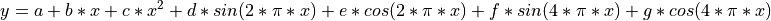

ccg_filter — Curve fitting and filtering
Class for computing the curve fitting/smoothing technique used by Thoning et al 1989 and at https://gml.noaa.gov/ccgg/mbl/crvfit/
This technique uses the following steps:
Fit a function consisting of a polynomial and harmonics to the data
Smooth the residuals from the function fit with a low-pass filter using fft and user defined cutoff value.
Calculate the inverse fft of the low-pass filter to get smoothed data in time domain.
Determine the smoothed curve of interest by combining the function with the filtered data.
The class is available by using the ‘import’ statement to include it in your python code:
import ccg_filter
The function to be fit to the data is specified in the routines ‘fitFunc’ and ‘harmonics’.
- ccg_filter.fitFunc(params, x, numpoly, numharm)[source]
Calculate the function at time x with coefficients given in params. This is a combination of a polynomial with numpoly coefficients, and a sin/cosine harmonic with numharm coefficients. e.g., with numpoly=3 and numharm=2:
(1)
where a = params[0], b = params[1], c = params[2], d = params[3] …
harmonics(params, x, numpoly, numharm)
calculate the harmonic part of the function at time x
ccg_filter Objects
- class ccg_filter.ccgFilter(xp, yp[, shortterm=80, longterm=667, sampleinterval=0, numpolyterms=3, numharmonics=4, timezero = -1, gap=0, use_gain_factor=False, debug=False])[source]
- Parameters
xp (list or numpy array) – Time values for input data. These must be decimal dates, such as produced by
dates.decimalDate().yp (list or numpy array) – Dependent values for input data.
shortterm (int) – Short term cutoff value in days for smoothing of data.
longterm (int) – Long term cutoff value in days for extracting trend from data
sampleinterval (int) – Interval in days between samples, calculate equally spaced values at this interval. Default is calculated from xp
numpoly (int) – Number of polynomial terms used in function fit - e.g. 3 = quadratic
numharm (int) – Number of harmonics used in function fit
timezero (float) – Value where x = 0 in the function coefficients. If timezero = -1, it will be reset to the year of the first data point.
gap (float) – When determining equally spaced values for the fft, if gap != 0, then gap is the number of days between samples that should be filled in with values from the function, rather than linear interpolated.
use_gain_factor (boolean) – Set to True if you want to include a gain factor to the harmonic amplitude. This means the harmonics part of the function will have a linearly increasing or decreasing amplitude with time.
debug (boolean) – If true, print out extra information during calculations.
Only xp and yp are required, all others are optional.
Class attributes:
Input Data
- ccg_filter.xp
(list or numpy array) Time value for input data
- ccg_filter.yp
(list or numpy array) Dependent values for input data
- ccg_filter.np
(int) Number of points in xp, yp
- ccg_filter.xinterp
(numpy array) Equally spaced interpolated values from input data
For the function fit
- ccg_filter.numpoly
(int) Number of polynomial terms used in function fit - e.g. 3 = quadratic
- ccg_filter.numharm
(int) Number of harmonics used in function fit
- ccg_filter.timezero
(float) Value where x = 0 in the function coefficients
- ccg_filter.params
(numpy array) Parameters (coefficients) for the function fit
- ccg_filter.covar
(numpy array) Covariance values of the parameters
- ccg_filter.numpm
(int) Total number of parameters in the function
- ccg_filter.resid
(numpy array) Residuals from function fit for times specified in input array xp
- ccg_filter.yinterp
(numpy array) Equally spaced interpolated values of the residuals from the functions fit for times specified in array xinterp
For the filter
- ccg_filter.sampleinterval
(int) Interval in days between equally spaced points used in the fft
- ccg_filter.dinterval
(float) Sample interval in decimal years
- ccg_filter.shortterm
(int) Short term cutoff value in days for smoothing of data
- ccg_filter.longterm
(int) Long term cutoff value in days for extracting trend from data
- ccg_filter.smooth
(numpy array) smoothed results from applying short term cutoff filter to residuals of data from the function. Equally spaced at xinterp
- ccg_filter.trend
(numpy array) trend results from applying long term cutoff filter to residuals of data from the function. Equally spaced at xinterp
- ccg_filter.deriv
(numpy array) derivative of function + trend. Equally spaced at xinterp
- ccg_filter.ninterp
(int) number of points in each of xinterp, smooth, trend
Misc.
- ccg_filter.rsd1
(float) Standard deviation of residuals about function
- ccg_filter.rsd2
(float) Standard deviation of residuals about smooth curve
- ccg_filter.debug
(boolean) Flag for showing additional information during computation
Methods
For each of the methods below, the input value x can be a single point, a list, or a numpy array
- ccg_filter.getFunctionValue(x)
Returns the value of the function part of the filter at time x.
- ccg_filter.getSmoothValue(x)
Returns the ‘smoothed’ data at time x. This is function + self.smooth
- ccg_filter.getTrendValue(x)
Returns the ‘trend’ of the data at time x. This is polynomial part of function + self.trend
- ccg_filter.getHarmonicValue(x)
Returns the value of the harmonic part of the function at time x.
- ccg_filter.getPolyValue(x)
Returns the value of the polynomial part of the function at time x
- ccg_filter.getAmplitudes()
Get seasonal cycle amplitudes. Returns a list of tuples, each tuple has 6 values
(year, total_amplitude, max_date, max_value, min_date, min_value)
- ccg_filter.getFilterResponse(cutoff)
Returns the value of the filter for frequencies 0 - 10 cycles/year at given cutoff
- ccg_filter.getMonthlyMeans()
Return a list of tuples containing monthy means from the smoothed curve. The value of the curve is computed at every sample interval, then summed up for each month and the average computed. Each tuple contains 5 values,
(year, month, average, std.dev., n)
- ccg_filter.getTrendCrossingDates()
Get the decimal dates when the smoothed curve crosses the trend curve. That is, when the detrended smooth seasonal cycle crosses 0. Use the
dates.calendarDate()function to convert from decimal date to calendar date.
Examples
Example of creating the ccgfilter class
import ccg_filter
# create the ccgfilt object
filt = ccg_filter.ccgFilter(xp, yp, shortterm, longterm, sampleinterval,
numpolyterms, numharmonics, timezero, gap, debug)
#
mm = filt.getMonthlyMeans()
amps = filt.getAmplitudes()
tcup, tcdown = filt.getTrendCrossingDates()
# get x,y data for plotting
x0 = filt.xinterp
y1 = filt.getFunctionValue(x0)
y2 = filt.getPolyValue(x0)
y3 = filt.getSmoothValue(x0)
y4 = filt.getTrendValue(x0)
# Seasonal Cycle
# x and y are original data points
trend = filt.getTrendValue(x)
detrend = y - trend
harmonics = filt.getHarmonicValue(x0)
smooth_cycle = harmonics + filt.smooth - filt.trend
# residuals from the function
resid_from_func = filt.resid
# smoothed residuals
resid_smooth = filt.smooth
# trend of residuals
resid_trend = filt.trend
# residuals about the smoothed line
resid_from_smooth = filt.yp - filt.getSmoothValue(x)
# equally spaced interpolated data with function removed
x1 = filt.xinterp
y9 = filt.yinterp